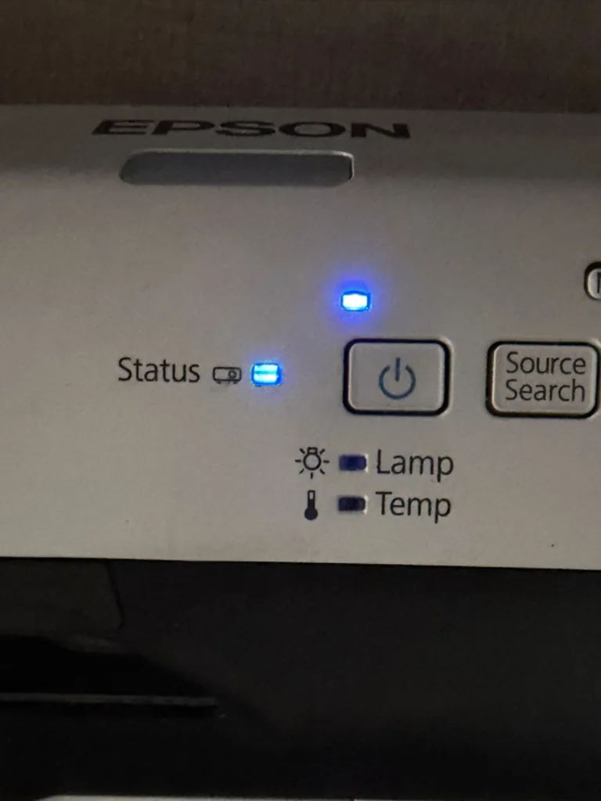
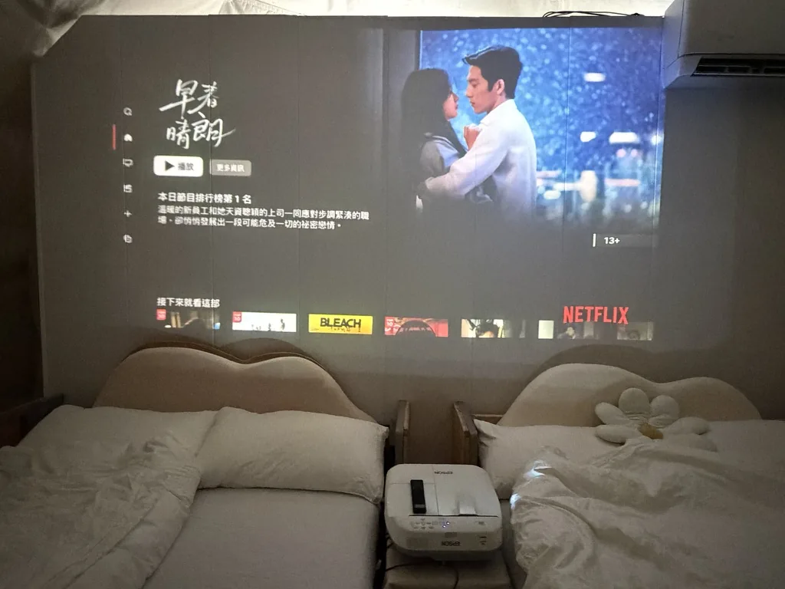
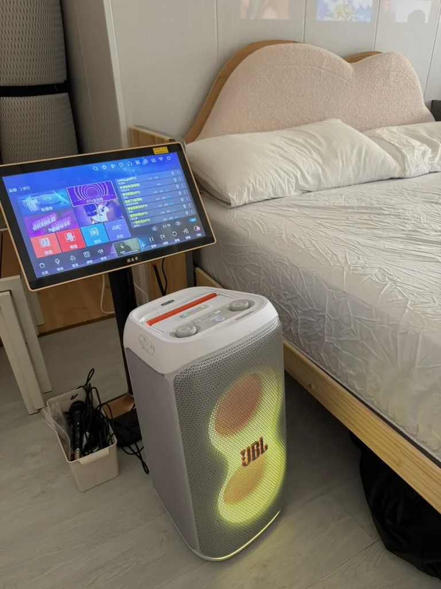

按下電源鍵後先稍候
按下投影機電源鍵後，右側指示燈會閃爍，表示投影機燈泡正在預熱。請等待約10～20 秒，畫面才會正常出現。
快速選擇：HDMI 1 是 Apple TV；HDMI 2 是 KTV 點歌機。投影機不需使用遙控器，直接按機身電源鍵旁的 Source Search 即可搜尋來源。

按下投影機電源鍵後，右側指示燈會閃爍，表示投影機燈泡正在預熱。請等待約10～20 秒，畫面才會正常出現。

先按一下黑色 Apple TV 遙控器喚醒 Apple TV，再按投影機機身電源鍵旁的 Source Search 搜尋來源：
切換來源不需要使用遙控器：請直接按投影機電源鍵旁的 Source Search，即可在 HDMI 1 與 HDMI 2 之間切換。若剛開機還沒有畫面，請先等投影機完成預熱，再搜尋正確來源。

白色 JBL 喇叭與 KTV 點歌機是兩套獨立系統。JBL 喇叭只負責兩支無線麥克風的聲音，也可透過藍牙連接手機播放音樂。